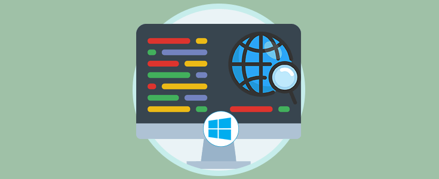
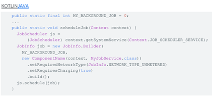
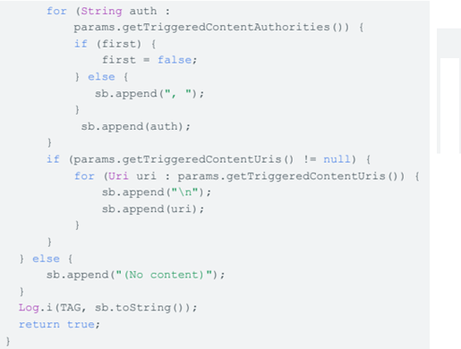

Optimizaciones en segundo plano
04 de Enero del 2021
Optimizaciones en segundo plano
Soluciones
Restricciones iniciadas por el usuario
A partir de Android 9 (API nivel 28), si una app muestra comportamientos perjudiciales como los que se describen en Android vitals, el sistema le solicita al usuario que restrinja el acceso de esa app a los recursos del sistema. Si el sistema nota que una app está consumiendo recursos excesivos, le envia una notificación al usuario y le da la opción de restringir las acciones de la app.Comportamientos
Restricciones para la recepción de emisiones de actividad en red

| Nota: Un BroadcastReceiver registrado con Context.registerReceiver () continúa recibiendo estas emisiones mientras se ejecuta la app. |
Cómo programar trabajos de red en conexiones no medidas

Cuando se cumplan las condiciones para el trabajo, la app recibirá una devolución de llamada para ejecutar el método onstart Job () en la Jobservice.class especificada. Para ver más ejemplos de la implementación de JobScheduler, consulta la app de ejemplo de JobScheduler.
Como supervisar la conectividad de red mientras se ejecuta la app
Las apps que están en ejecución pueden detectar CONNECTIVITY CHANGE con un BroadcastReceiver registrado. Sin embargo, la API de connectivity Manager proporciona un método más sólido para solicitar una devolución de llamada solo cuando se cumplen las condiciones de red especificadas.
.Restricciones para la recepción de emisiones de imagen y video
En Android 7.0 (API nivel 24), las apps no pueden enviar ni recibir emisiones de ACTION NEW PICTURE ni de ACTION NEW VIDEO. Esta restricción ayuda a aliviar el rendimiento y afecta la experiencia del usuario cuando se deben activar varias apps para procesar una nueva imagen o un nuevo video.
.Cómo activar trabajos durante cambios URI de contenido
Para activar trabajos durante cambios de URI de contenido, en Android 7.0 (API nivel 24) se extiende la API de JobInfo con los siguientes métodos:
Como supervisar la conectividad de red mientras se ejecuta la app
Las apps que están en ejecución pueden detectar CONNECTIVITY CHANGE con un BroadcastReceiver registrado. Sin embargo, la API de connectivity Manager proporciona un método más sólido para solicitar una devolución de llamada solo cuando se cumplen las condiciones de red especificadas.
Restricciones para imagen y video
En Android 7.0 (API nivel 24), las apps no pueden enviar ni recibir emisiones de ACTION NEW PICTURE ni de ACTION NEW VIDEO. Esta restricción ayuda a aliviar el rendimiento y afecta la experiencia del usuario cuando se deben activar varias apps para procesar una nueva imagen o un nuevo video.
Cómo activar trabajos durante cambios URI de contenido
Para activar trabajos durante cambios de URI de contenido, en Android 7.0 (API nivel 24) se extiende la API de JobInfo con los siguientes métodos:
Cómo determinar qué autoridades de contenido activaron un trabajo
En Android 7.0 (API nivel 24), también se extiende JobParameters para permitir que las apps reciban información útil sobre qué autoridades de contenido y URI activaron el trabajo:

Cómo optimizar aún más tu app
Optimizar tus apps para que se ejecuten en dispositivos con poca memoria, o en condiciones de poca memoria, puede mejorar el rendimiento y la experiencia del usuario. Si quitas las dependencias de los servicios en segundo plano y los receptores de emisión implícita registrados en manifiestos, tu app funcionará mejor en esos dispositivos.